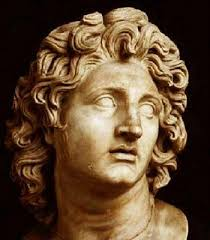
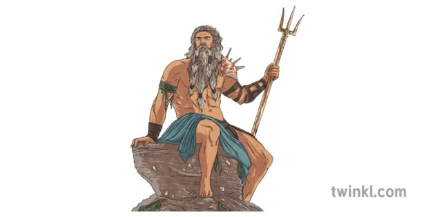
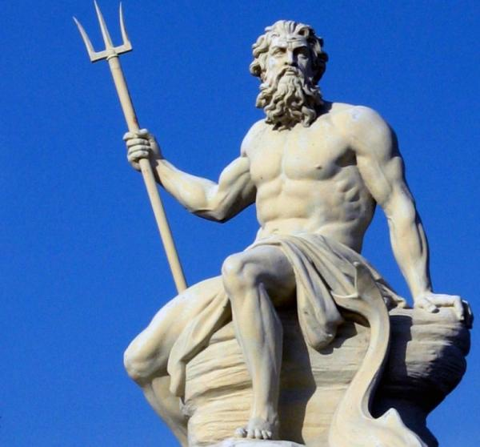
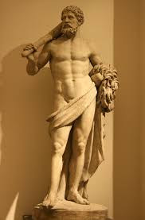
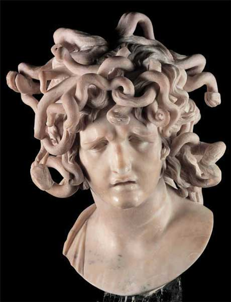

Greece
Characters
HOME|SPORTS|GASTRONOMY|PLACES|ECONOMY
Greek Mythological Characters
Greek mythology is filled with fascinating characters who represent human emotions, natural forces, and moral lessons. These characters include gods, goddesses, heroes, and mythical creatures, and their stories have influenced literature, art, and culture for thousands of years.
The Olympian Gods
At the center of Greek mythology are the Twelve Olympian Gods, who lived on Mount Olympus.
Zeus, the king of the gods, ruled over the sky and controlled thunder and lightning. He represented law, order, and justice, but he was also known for his many love affairs, which often caused conflict among the gods.
Hera, the queen of the gods, symbolized marriage and motherhood. Although powerful and regal, she was often portrayed as vengeful due to Zeus’s infidelity. Her stories highlight themes of loyalty, pride, and punishment.

Poseidon, Zeus’s brother, ruled the seas. He could create earthquakes, storms, and tsunamis with his trident. His personality was violent and emotional, reflecting the unpredictable nature of the ocean. Hades, another brother of Zeus, governed the underworld. Unlike modern ideas of hell, the Greek underworld was simply the place where souls went after death. Hades was strict but fair, and he rarely left his dark realm. |
Athena, born from Zeus’s head, was the goddess of wisdom, strategy, and crafts. She represented intelligence, reason, and civilized warfare. Athena often guided heroes and protected cities. Ares, the god of war, symbolized chaos, bloodshed, and brutality. Unlike Athena, Ares enjoyed violence and destruction, making him unpopular among both gods and humans. |
||
|  |  |  | |
Aphrodite, the goddess of love and beauty, had the power to make gods and mortals fall in love. Her beauty caused jealousy, passion, and conflict, showing how love can be both powerful and dangerous. Apollo, the god of the sun, music, poetry, and prophecy, represented harmony and order. He was admired for his beauty and talent and often punished those who showed arrogance. Artemis, Apollo’s twin sister, was the goddess of the moon and the hunt. She valued independence and protected nature and young women. Hermes, the messenger of the gods, was clever and fast. He guided souls to the underworld and was the god of travel, trade, and thieves. Hephaestus, the god of fire and metalworking, was a master craftsman. Although physically imperfect, he created powerful weapons and armor for the gods. Demeter, the goddess of agriculture, controlled the fertility of the land. Her grief over her daughter Persephone explained the changing seasons. |
 | Greek heroes were often half-god, half-human and represented courage, strength, and intelligence. Heracles (Hercules) was famous for his strength and his Twelve Labors, which tested his endurance and bravery. Perseus defeated the monster Medusa using cleverness and help from the gods. Theseus killed the Minotaur and brought peace to Athens. Odysseus, the hero of The Odyssey, was known for his intelligence and long journey home after the Trojan War. |
|
.jpg) |
Greek mythology also includes terrifying and fascinating creatures such as Medusa, the Minotaur, Cyclopes, Sirens, and Hydras. These beings often symbolized fear, temptation, or punishment. |  | |
Greek mythological characters reflect the strengths and weaknesses of humanity. They experience love, jealousy, anger, and pride, making them relatable despite their divine powers. Their stories continue to influence modern literature, films, psychology, and art, proving that Greek mythology remains relevant even today. |
|||